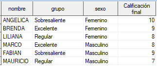
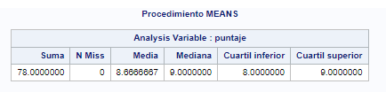
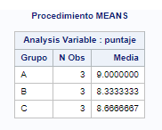
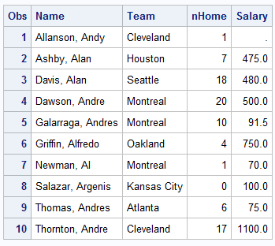

Elaboración de reportes
Creación de reportes¶
SAS es una herramienta muy útil para crear reportes de datos, algunos de ellos se pueden personalizar o adaptarlos a distintas necesidades.
SAS puede realizar reportes muy simples, hasta tabulados muy complejos y personalizados, incluso puede exportarlos a otros formatos como Excel.
En esta sección se mostrarán cómo realizar reportes simples usando algunos procedimientos y después se explorará cómo realizar reportes más generales.
Para realizar agregados en formato SQL, puede visitar este sitio en donde se muestran algunos ejemplos de agregados.
Formatos¶
Anteriormente ya habíamos hablado de los formatos que están precargados en SAS. En esta ocasión se hablará de cómo hacer formatos personalizados para incluirlos en los reportes.
El procedimiento FORMAT permite crear formatos personalizados y usarlos en cualquier dataset o procedimiento. Los formatos son útiles, por ejemplo, cuando se tienen encuestas que están codificadas con valores numéricos, pero tienen una etiqueta.
El siguiente ejemplo muestra cómo crear un formato numérico que represente el sexo de una persona y un formato de tipo caracter para la variable grupo y su aplicación a un dataset existente. Note que el formato para variables de tipo caracter requiere del símbolo $.
1 2 3 4 5 6 7 8 9 10 11 12 13 14 15 16 17 18 19 20 21 22 23 24 25 26 27 | |
La siguiente imagen muestra cómo se ve el dataset resultante.

Los formatos se almacenan en la librería temporal WORK y estarán disponibles durante toda la sesión.
Para guardar los formatos en una librería permanente, se puede utilizar la opción LIBRARY = en la sentencia PROC FORMAT. Los formatos estarán almacenados en un catálogo llamado FORMATS. Para acceder a ellos, se debe especificar la opción options fmtsearch=() con el nombre de la librería dentro del paréntesis.
Formato no encontrado
Tenga cuidado en asignar un formato a un dataset y no almacenarlo. SAS podría no reconocerlo y no podría leer la tabla.
Se puede saber más detalles del procedimiento FORMAT aquí.
Estadísticas descriptivas con PROC MEANS¶
Para realizar un análisis descriptivo de las variables de un dataset, se puede usar el procedimiento MEANS, el cual calcula algunos estadísticos comunmente usados y que nos permitirá darnos una idea de cómo son los datos.
Análisis más detallados
Para realizar análisis más completos de una variable, se puede usar el procedimiento UNIVARIATE, el cual permitirá realizar histogramas, estadísticas de orden y algunas pruebas estadísticas.
La sintaxis más simple es la siguiente:
PROC MEANS DATA = dataset;
VAR variables;
RUN;
Considere la siguiente tabla:
| nombre | Grupo | puntaje |
|---|---|---|
| ANGÉLICA | A | 10 |
| BRENDA | A | 9 |
| MARCO | B | 8 |
| LILIANA | B | 8 |
| FABIÁN | C | 9 |
| MAURICIO | C | 7 |
| ÁLVARO | A | 8 |
| ÓSCAR | B | 9 |
| BELÉN | C | 10 |
El siguiente ejemplo muestra cómo realizar un análisis simple de la variable puntaje.
1 2 3 | |
El resultado obtenido es el siguiente:

Especificando estadísticas a calcular¶
Como se vio en el ejemplo anterior, si no se especifican las estadísticas a calcular, SAS automáticamente calcula el número de observaciones (N), la media (MEAN), desviación estándar (STD), el mínimo (MIN) y el máximo (MAX).
Usando los mismos datos, en el siguiente ejemplo se pedirá que calcule la suma (SUM), el número de observaciones faltantes (NMISS), la media (MEAN), la mediana (MEDIAN) y los cuartiles (Q1 y Q3).
1 2 3 | |
El resultado obtenido es el siguiente:

Análisis por subgrupos¶
Cuando se tiene una variable categórica, se puede usar para definir subgrupos y realizar los cálculos por cada grupo. Se puede usar la sentencia CLASS para definir una variable que agrupe las observaciones a calcular. El siguiente ejemplo nos muestra cómo calcular la media de calificaciones por grupo.
1 2 3 4 | |
El resultado se muestra a continuación:

Para conocer más a cerca del procedimiento MEANS visite la documentación.
Reportes básicos¶
El reporte más simple que se puede crear, es mostrar el conjunto de datos usando el procedimiento PROC PRINT.
Sin embargo, para datasets muy grandes, esto no sería una buena opción debido a que SAS gastaría muchos recursos en imprimir toda la tabla. Se pueden usar ciertas configuraciones para que SAS solo procece cierta cantidad de observaciones de un dataset.
La primera de ellas es mediante las opciones generales, la cual afectaría a todos los procedimientos durante la sesión o mediante las opciones de dataset la cual solo aplica durante ese procedimiento. Para una referencia completa sobre las opciones generales, visite el diccionario de opciones del sistema y para las opciones de dataset vea el diccionario de opciones de datasets.
El siguiente ejemplo muestra las primeras diez observaciones del conjunto de datos de baseball, pero solo pedimos que muestre ciertas variables.
1 2 3 | |
Produce el siguiente resultado

Un reporte con seleccionando casos con total¶
PROC PRINT tambien tiene diversas sentencias para hacer reportes más completos o específicos.
1 2 3 4 5 6 7 8 9 10 11 12 13 | |
El anterior ejemplo muestra un reporte que incluye el nombre de todos los jugadores del equipo San Francisco, número de home run ysu salario; al final del reporte se presenta el gran total de estas variables. En este ejemplo se modificaron las etiquetas y los formatos, pero sólo para el reporte mediante las sentencias LABEL y FORMAT y se seleccionaron las observaciones que cumplieran cierto criterio.
La opción NOOBS en la sentencia DATA pide no imprimir el número de observación del dataset y con la opción LABEL se mostrarán las etiquetas de las variables.
La sentencia VAR especifica las variables a mostrar.
La sentencia WHERE selecciona las observaciones que cumplan la condición de que el equipo sea igual a San Francisco.
La sentencia FORMAT le asigna a la variable SALARY el formato DOLLAR12..
LABEL especifica las etiquetas de las variables en el reporte. En caso de que las variables del dataset ya tengan etiquetas, estas etiquetas definidas prevalecen en el reporte.
La sentencia SUM es la que especifica las variables que mostrarán el gran total. Finalmente se agrega la opción TITLE para que se le ponga un título al reporte y se vuelve a llamar al final para que vuelva a su valor inicial.

Reporte con subtotales¶
Es posible mostrar los reportes con subtotales por grupos de variables.
Datos agrupados
Los datos se deberían ordenar por la variables que se desee hacer el agrupamiento para evitar posibles errores en los cálculos. SAS considera valores iguales de la variable de agrupamiento como un bloque. Si SAS encontrara una observación con un valor que ya procesó, se generará un error.
Se puede usar el procedimiento SORT para ordenar una dataset por las variables que se deseen y posteriormente realizar el reporte.
1 2 3 4 5 6 7 8 9 10 11 12 13 14 15 16 17 | |
El procedimiento SORT especifica que se ordene por las variables division y luego por team y se pide que se guarde una copia temporal, con el fin de no modificar el dataset original.
En el procedimiento PRINT se usa la sentencia BY para que crear el reporte por combinaciones de valores de division y team.

La imagen anterior muestra el ultimo grupo de variables (División = West y Equipo = Texas). Nótese que este grupo contiene los subtotales tanto de las variables team y division así como el gran total. Cada grupo contiene como título el valor de las variables division y team.
Personalizar etiquetas
Se pueden agregar en la sentencia PROC PRINT las opciones SUMLABEL = y GRANDTOTAL_LABEL = para personalizar las etiquetas de subtotales y el gran total.
Si se desea mostrar un reporte con otro estilo resaltando las variables de agrupamiento, se puede agregar la sentencia.
ID DIVISION TEAM;
El resultado es el siguente.